| Author | Thread |
Shaedy
Guest | most popular classes plus difficulty i am just starting ao and i was curious to what classes seem to be the most popular/most useless/easiest to solo ect what are your opinions? |
Mechgal
Leetas
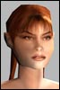 | Traders would be the most difficult from what i have been told, although I have played one since August..
Swif |
KrazyKanuck
Supa Leet
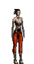 | I would have to say the answers to your questions are
MP/fixer/MP |
BrontoCowboy
Supa Leet
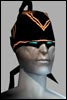 | quote:
Originally posted by KrazyKanuck
I would have to say the answers to your questions are
MP/fixer/MP
Yup this guy knows what he's talking about.  |
Mangoslurpy
Soleet
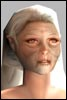 | the most popular is martial artist if you believe in the stats
most useless...mmh...depends on the level. some ppl would say, fixers are useless. if you're low level and need to get to a mission or something you're glad for the extra speed fixers provide you with. at the moment, i'm feeling pretty useless with my agent sometimes.
easiest to solo are without doubt the mps. they generaly have pets far above them so they don't event think about fighting mobs their own level. engineers can have an even better pet but they can't buff themselves into it. mps are a little one-man-army. they have a fight pet, a heal pet, a mez pet, nukes and great buffs, if you want an easy (yet quite expensive way ) go mp. |
Mintfloss
Leetas
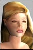 | Trader is a very fun class to play : we heal, we mezz, we have crazy crits, we wrangle...
But its not a good class as a first char because u need a lot of credits for a Trader.
So like others said, choose a MP, a MA or a ENF
Isoea lvl 106 Trader
Nihilie lvl 90 Adventurer
Omni
RK2 |
Dareus
Phear Leet
 | I find engineers are more popular at my level (100ish) then MP's.
Engineers are better suited to power gamers since they can drastically overequip and have a pet that doesn't time out, and can solo very easy at this level. |
Biffstatsnugly
Soleet
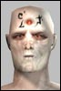 |  lol ya lol yaI really miss the days when engie's where gimps, and i couldnt find a group to save my life.
Never thought i would say that.
Back then you could run thru all of trade and never bump into a engie. Now i trip over engie twinks, at every turn. I play too many character though for it to matter much. So oh well. Just like the unique feel to the class. Which is way gone by now but hey times change. |
nikh
Soleet
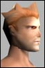 | MPs are definitely popular, and efficient. some other professions too as you may have read above.
But if you are just starting you must consider also the difficulty to play the classes. MPs are complex to play and IMHO not the best profession to start and discover AO.
My advice: start with an MA. They are easy to play, and quite efficient (especially in the lower levles: you'll be able to solo hard mobs easily). THen after a couple of weeks, when you're used to AO, if you want to discover new chalenges you may stat in parallel an MP or a Trader - or stick with your MA  |
PaulyShore
Phear Leet
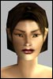 | Don't play a trader unless you have another char lvl90+ or a good guild to fund him/her and get him/her nanos. My trader's biggest problem isn't money... it's finding the nanos she needs that aren't in shops.
Popular MA/MP. Usless = fixer. Powerful = MP.
Trader = really fun... very versatile nanos.
MA is very easy to start out as a first character. Not nearly as many nano crystals to buy as MPs due to pets, and you don't have to worry about finding or buying the next weapon to overequip... AND MA damage is quite impressive when you start out (and is also pretty good at higher lvls now too since they fixed it). |
kyleb
Supa Leet
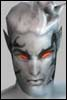 | My MP is very simple too play and he's fairly uber, I walk over 70% mission w/ ease. I did have enough cash for anything I needed my 1st 30 lvls, which go fast, and so far I have had no realll money problems, if I need some I got do 3 missions, sell the items and walk away w/ a good amount of $.
Don't play a NT.
Don't pick a nanomage as breed. Last edited by kyleb on March 8th, 2002 at 21:14 |
Crazin_Azin
Phear Leet
 |  yup yup yup yupbump this whole thread, basically.
MA's are the ultimate n00b class. So easy, so fun.
With a MA you dont have to worry about having the best weapons, or getting implants and buffs so you can over equip your weapons. You dont have to worry about many nano's. You dont really even have to worry about getting a whole lot of good armor at lower levels, because your evades are good enough that you take hits impressively well.
With my MA I didn't even bother with implants until I was about level 70. By then i was starting to need them.(made a big difference, hehe)
Before then I didn't really need them. At lower levels, you really are that good. I remember dropping by the arena and almost beating a twinked out enforcer, and that was before I had implants.
I always recommend a MA for any newbie that has no clue what they're doing. |
locomdenom
Supa Leet
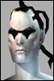 | Fixers may be useless, but we gots all kinds of love for each other!
Nah, seriously. Fixer and adventurer are probably the most useless in a group, followed by prolly agents.
But. Fixers are the most fun to roleplay. =) |
Darkbane
Council of Testers | from the stats 1st MA
2nd Soldier
3rd Enforcer
4th Agent
5th Engineer
6th Meta-Physicist
7th Doctor
8th Nano-technician
9th Adventurer
10th Fixer
11th Trader
12th Bureaucrat
Note that 6th-8th are very close. For a beginner, stick with one of the top 3. |
Babadi
Phear Leet
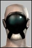 | MP's are the uber Gods of AO and with the recent MA changes they look pretty good to.
Fixers are kind of weak, lots of cool abilities without much of a purpose, but they are a cool class imho.
Adv. I believe are pretty gimped.
NT's are a blast at early levels, over 100 they suck bad. This is my class and at 117 I feel I'm really lacking. But, who know, by the time you hit that level, maybe FC will fix us.
Aside from those 3 I don't really think you can go wrong, and even they have they're upside. (they should be the next 3 fixed, and fixed classes seem to really get fun.) |
assassimon
Clan Apocalypse
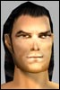 | quote:
Originally posted by Nihilie
Trader is a very fun class to play : we heal, we mezz, we have crazy crits, we wrangle...
But its not a good class as a first char because u need a lot of credits for a Trader.
So like others said, choose a MP, a MA or a ENF
Isoea lvl 106 Trader
Nihilie lvl 90 Adventurer
Omni
RK2
Do NOT start a MP if you don't have the credits for it, you will lvl really slow. MPs are probably the most expensive prof of them all(maybe same for all prof pets) you need to get a new pet every few lvls so need to buy alot of Nanos.
I think MA is a very good starting character, really fun to play, doesn't cost much, can solo good at low lvl, everyone want them in team, can heal.
Enforcers also really nice starting characters and soldiers too.
All these characters are pretty easy to play and you don't need to know extremly much about the game to have fun and be good with them.
With the new patch with some MA love in I have started to play my MA again (don't leveling much cuz it's pointless) and I have ALOT more fun with my MA than with my MP, no stupid pets that get stuck in every room, no pets that suddenly vanish cuz I didn't check when they would time out, just attack, heal and have fun |
biggfoo
Supa Leet
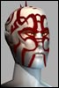 | Kind scary how no one is really trying to argue that fixer's aren't the most useless... =/ |
KrazyKanuck
Supa Leet
| Re: from the stats quote:
Originally posted by Darkbane
1st MA
2nd Soldier
3rd Enforcer
4th Agent
5th Engineer
6th Meta-Physicist
7th Doctor
8th Nano-technician
9th Adventurer
10th Fixer
11th Trader
12th Bureaucrat
Note that 6th-8th are very close. For a beginner, stick with one of the top 3.
he asked the easiest to solo though he didn't ask which was the easiest to play. If he did that then i agree the soldiers enforcer and MAs are probably 3 of the most easy.
And sorry but that list has nothing to do with easiest soloing ability |
KramerTheWeird
Phear Leet
| Statistics as of this post of number of players in both servers:
martial artist 5624 12.31 %
soldier 5427 11.87 %
enforcer 5057 11.06 %
agent 4396 9.62 %
engineer 3962 8.67 %
meta-physicist 3789 8.29 %
doctor 3773 8.26 %
nano-technician 3769 8.25 %
adventurer 3403 7.45 %
fixer 2756 6.03 %
trader 2068 4.52 %
bureaucrat 1679 3.67 %
total 45703 100 %
I'm playing crat and i'm having the best time in AO, and I was playing MP earlier. Guess it's just me heh Last edited by KramerTheWeird on March 9th, 2002 at 11:25 |
assassimon
Clan Apocalypse
| Re: Re: from the stats quote:
Originally posted by KrazyKanuck
he asked the easiest to solo though he didn't ask which was the easiest to play. If he did that then i agree the soldiers enforcer and MAs are probably 3 of the most easy.
And sorry but that list has nothing to do with easiest soloing ability
Pet profs are easiest to solo with, but MAs are ok now too, I can solo even con mission with Azz |
All times are GMT.


 Anarchy Online Bulletin Board > Game-Play > The World of Rubi-Ka > most popular classes plus difficulty
Anarchy Online Bulletin Board > Game-Play > The World of Rubi-Ka > most popular classes plus difficulty Last Thread Next Thread
Last Thread Next Thread 
 March 8th, 2002 04:55
March 8th, 2002 04:55